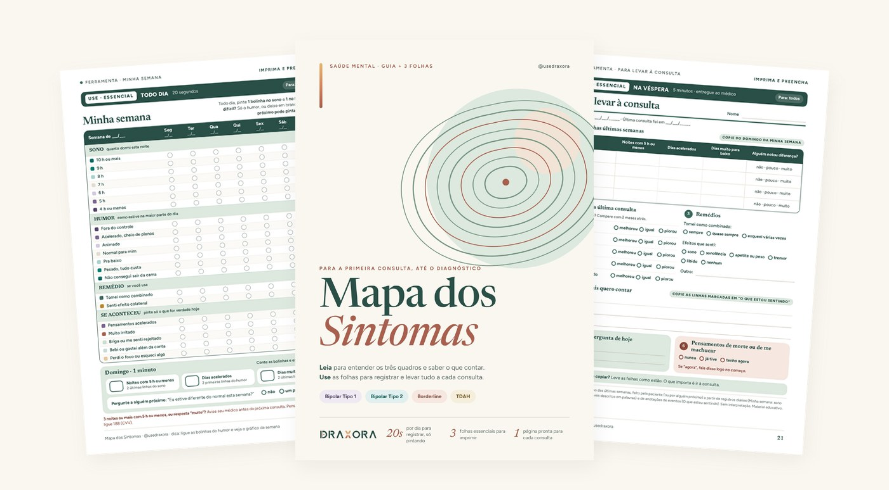
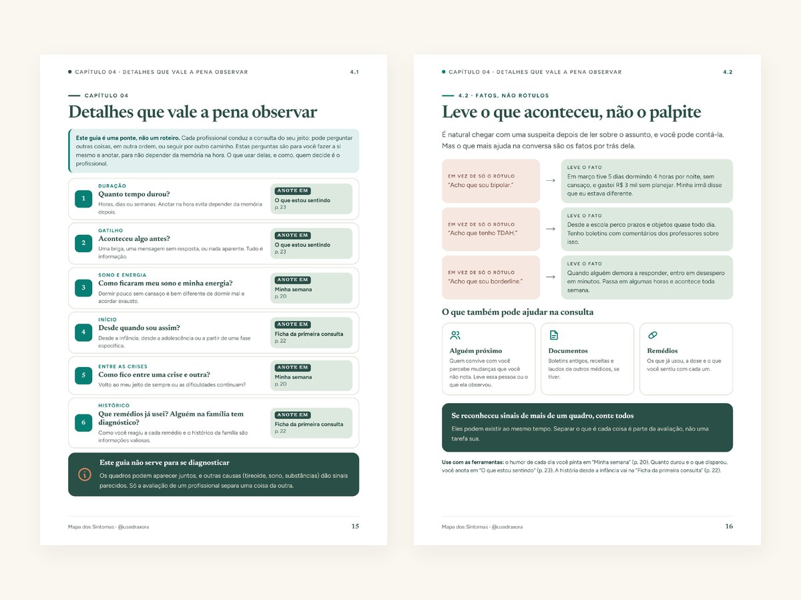
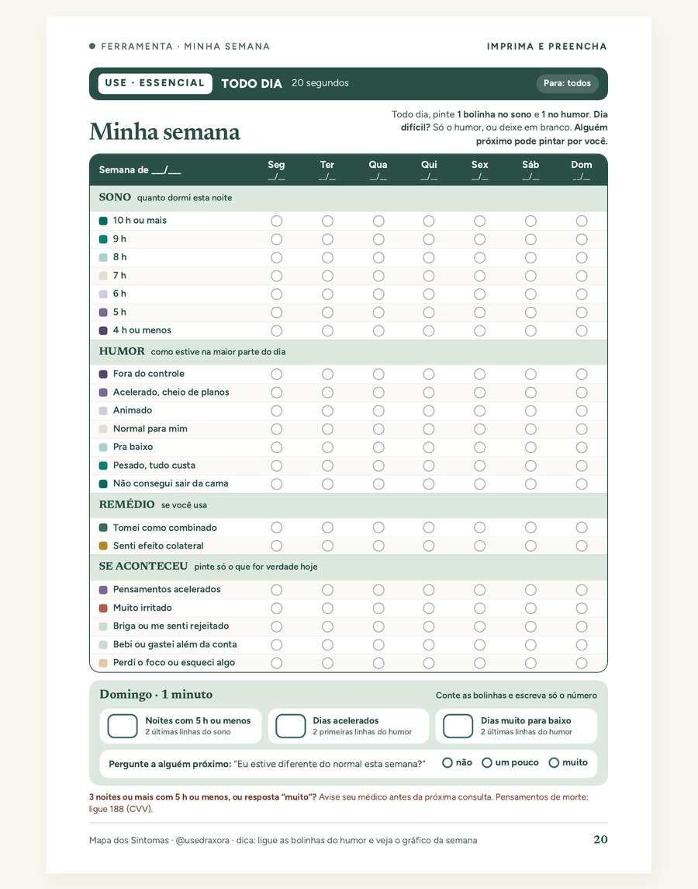
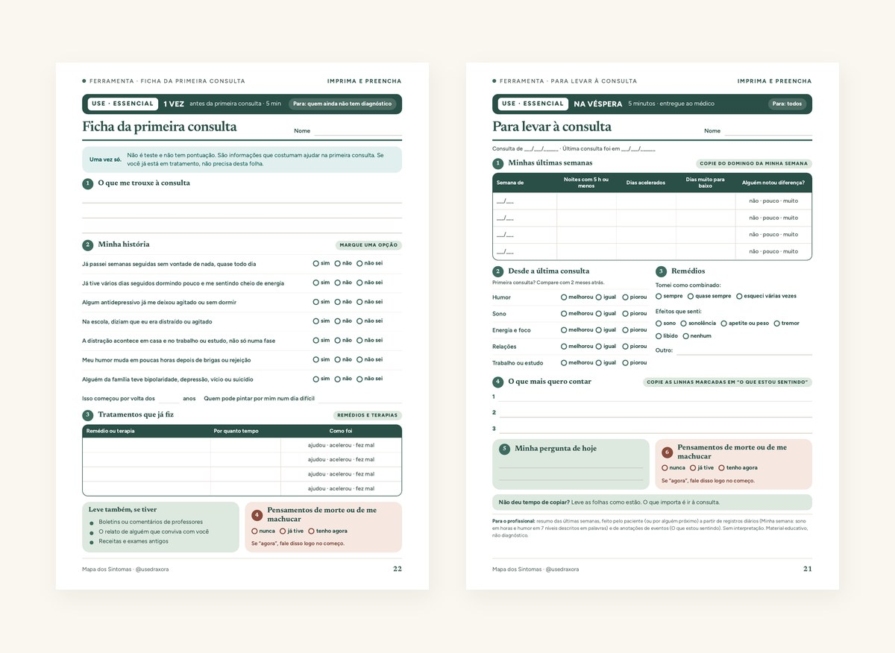

Chegue à consulta sabendo o que contar.
Na hora, semanas viram uma frase: “ando meio mal”. Um guia + 3 folhas para imprimir mostram o que vale a pena observar e levam tudo em uma página.

Na consulta, semanas viram uma frase.
E os detalhes que ajudariam o profissional a entender ficam de fora. Não é falta de vontade: é memória de consulta, curta e sob pressão. O guia mostra quais detalhes valem a pena e as folhas guardam tudo por você.
- 1Leiao que vale a pena observar, sem jargão
- 2Anote20 segundos por dia, só pintando
- 3Levetudo em 1 página para a consulta
Da frase solta à página pronta.
- você conta o que lembra no dia
- os detalhes de semanas atrás se perdem
- cada consulta parece começar do zero
- você sabe o que vale a pena observar
- as semanas ficam registradas em 20 segundos por dia
- você entrega 1 página e a conversa começa do ponto certo

Você conta melhor. Quem avalia é sempre o profissional.
Entenda os três quadros, sem jargão.
Bipolar 1 e 2, borderline e TDAH, e os detalhes que vale a pena observar antes da consulta. Fatos, não rótulos. Para observar e contar, nunca para se diagnosticar.

20 segundos por dia. Só pintar.
Sem escrever e sem dar nota. Dia difícil? Só o humor já vale.

Sua história e suas semanas em uma página.
A Ficha conta sua história uma vez. A página da consulta resume as semanas. Você entrega e a conversa começa do ponto certo.

Para observar e contar. Nunca para diagnosticar.
É para você se…
- vai à primeira consulta;
- já foi a várias consultas e sente que não conseguiu explicar tudo;
- quer ajudar alguém da família a se preparar.
Não é para…
- fazer diagnóstico sozinho;
- substituir consulta ou tratamento;
- mudar medicação por conta própria;
- acompanhar o tratamento depois do diagnóstico (para isso, vem aí o app).

Feito por quem já esteve do outro lado da consulta.
Elias Jr, profissional de tecnologia há 11 anos e fundador da Draxora. O método vem da tecnologia: observar, registrar e comunicar com precisão, agora a serviço da consulta.

Receba o guia completo no seu e-mail.
O guia de 25 páginas e as folhas para imprimir, de graça. Deixe seu e-mail e enviamos em instantes.
Mapa dos Sintomas
- PDF do guia · 25 páginas para ler no celular: bipolaridade, borderline e TDAH, sem jargão
- PDF das folhas para imprimir · alta qualidade, imprima quantas vezes precisar
- 3 folhas essenciais: Ficha da primeira consulta, Minha semana (20 s por dia) e Para levar à consulta (tudo em 1 página)
- + 1 folha extra: O que estou sentindo
Material educativo, revisado por psicóloga. Não faz diagnóstico.
Perguntas frequentes.
O guia diz qual transtorno eu tenho?
Serve se eu já fui a várias consultas?
Preciso imprimir?
É grátis mesmo? Por quê?
Como recebo o material?
Posso usar para ajudar alguém da família?
Estou numa fase muito difícil. O que faço?
O app do Mapa dos Sintomas está a caminho.
Para acompanhar o tratamento: registre o dia em segundos e chegue a cada retorno com tudo pronto. Deixe seu e-mail e saiba primeiro.
pessoas esperando o app